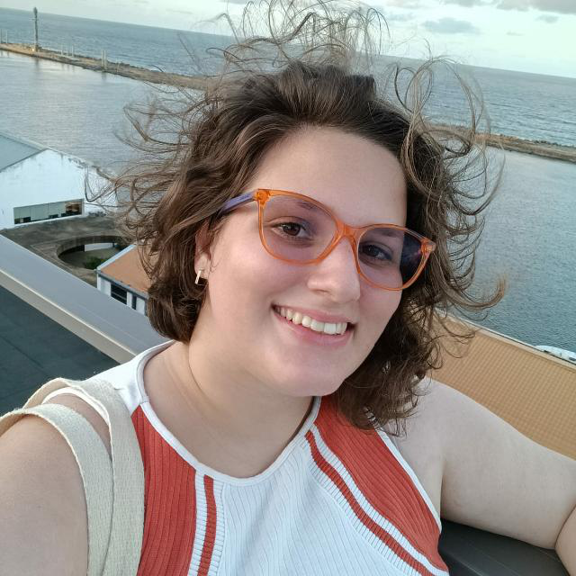

Meu nome é Alice, tenho 24 anos e sou apaixonada por bréchos.
Sempre gostei de coisas com o estilo mais vintage mas foi em 2018 que a paixão aflorou.
Desde então procuro por Bréchos e Bazares em Recife com o intuito de garimpar peças vintage principalmente
com CGC.
Para me conhecer mais:
 Me siga no instagram!
Me siga no instagram!
Vamos fazer conexão no linkedin!
Vamos fazer conexão no
GitHub!